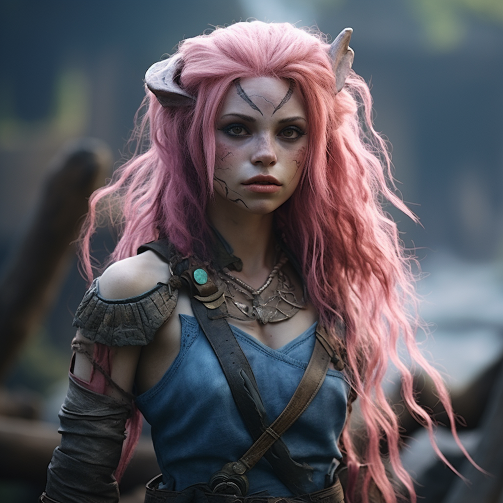
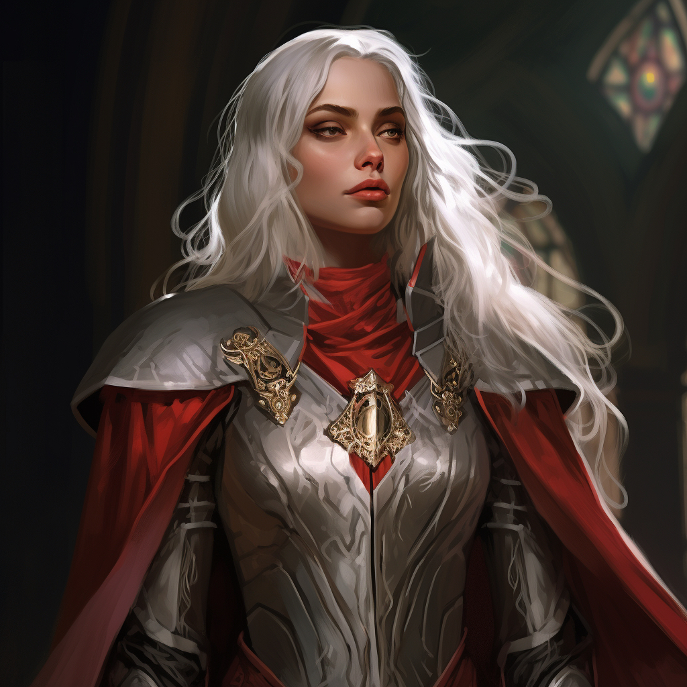
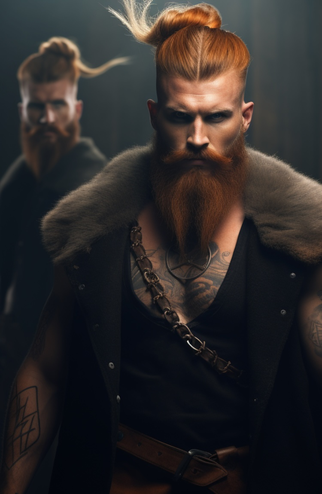
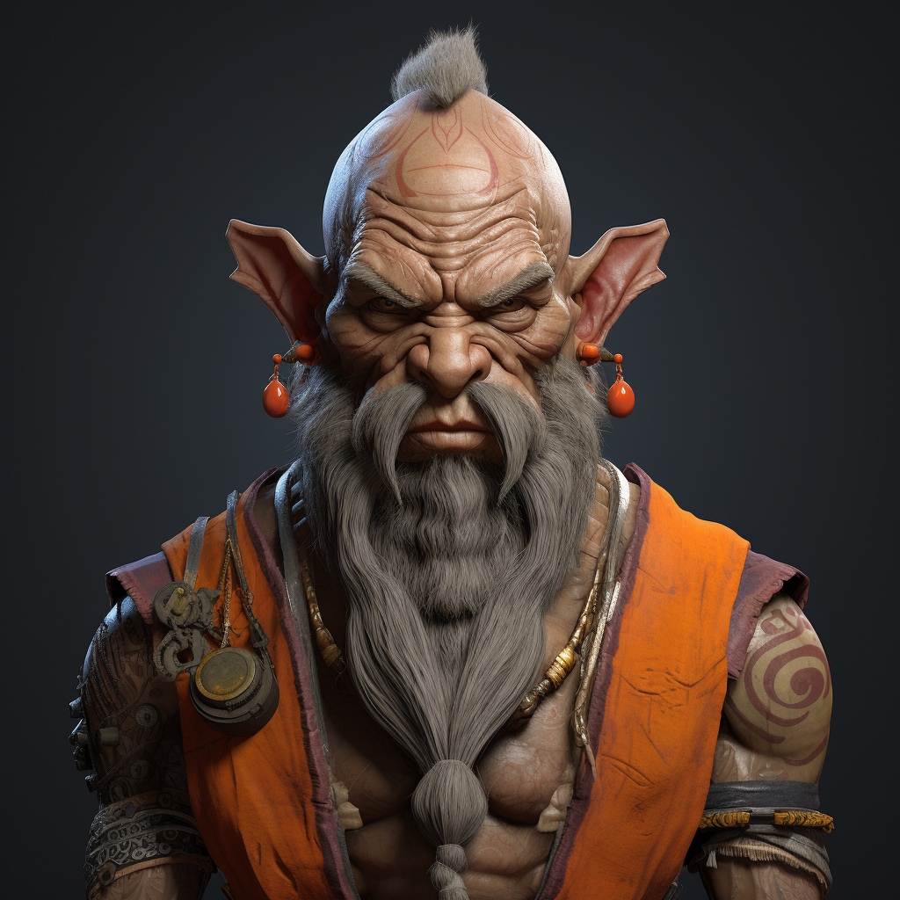
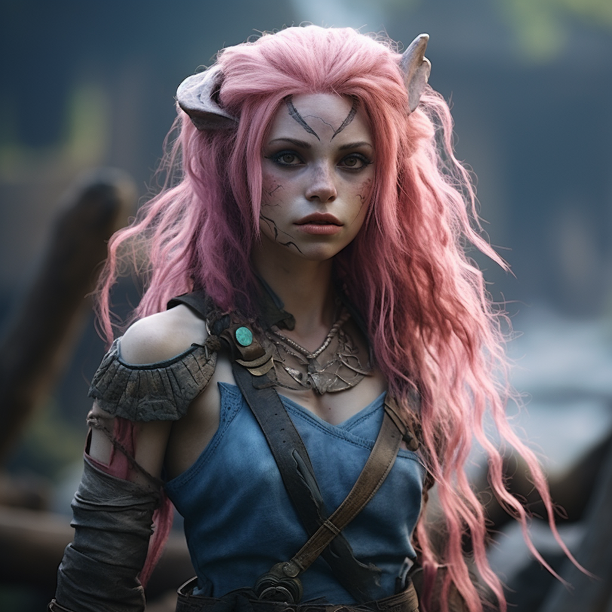
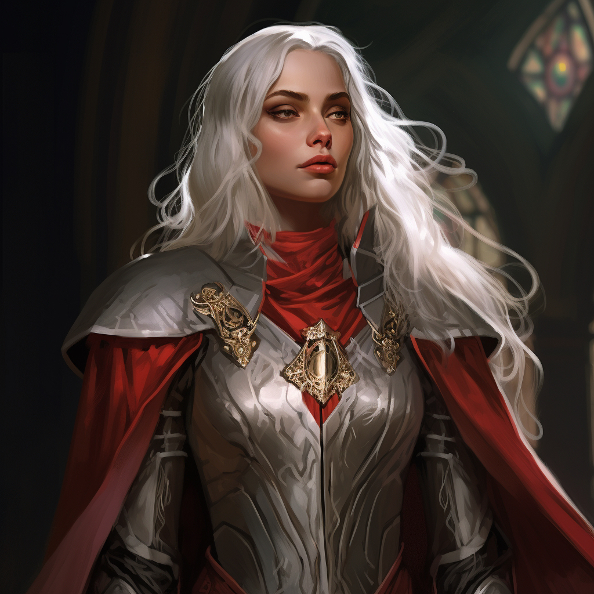
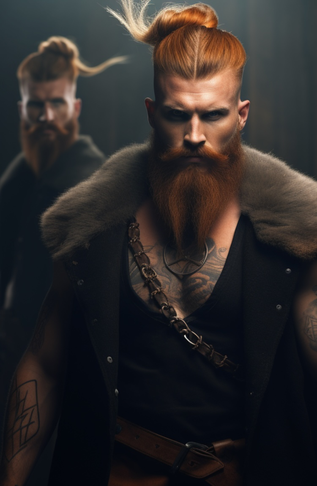
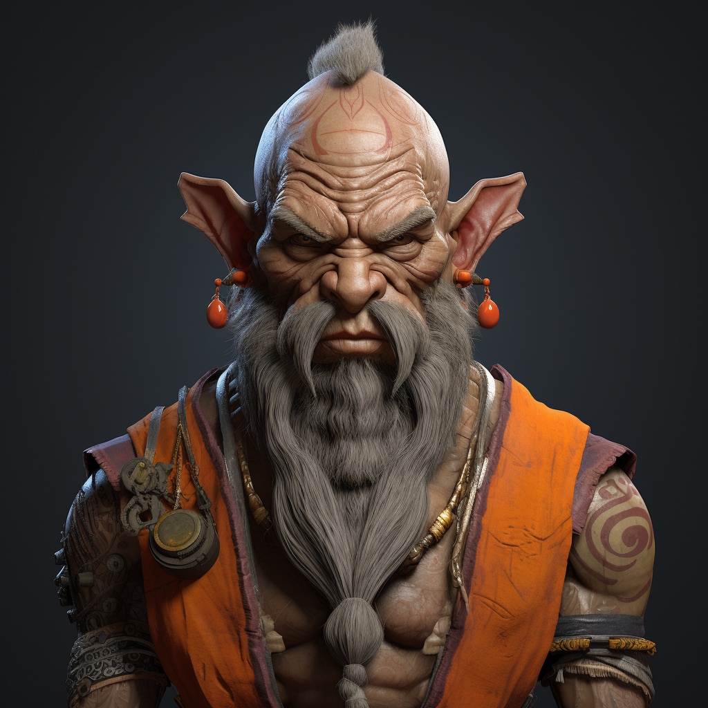

Áurea Stormtracker
Ezara Paleblight
Fjall Halvorson
Freyina the Huntress

Peradox Copperstancer
The Curse of Strahd
Áurea Stormtracker
Ezara Paleblight
Fjall Halvorson
Freyina the Huntress
Peradox Copperstancer
Monday 25 Sep 2023
In the dimly lit depths of a decrepit house that stood as a somber sentinel to an age long past, our group of brave adventurers ventured forth. The narrow stone staircase, seemed to descend into the very heart of darkness itself, with Peradox leading the way, their torch casting eerie shadows that danced menacingly on the aged walls.
As they ventured deeper into the mansion, they couldn't help but hear the incessant whispers that seemed to emanate from all around them. The words, if one dared to focus, were chilling—death, king, sacrifice—but the whispers were elusive, as though they slipped through the cracks of sanity.
Moving further down the stone corridors, barely wider than an average humans shoulder width, they encountered two alcoves, each adorned with doors bearing names. The adventurers' curiosity led them to open the door marked "Rosa Valda Durst," revealing a crypt with a stone coffin. Strangely, the coffin was empty. Fjall, driven by curiosity, peered inside, only to find emptiness staring back. The names on these doors matched those of the children's ghosts that haunted the upper floors—a grim realisation.
Pressing on, they entered a room that had once been use as some kind of dining hall but had long fallen into disuse. In one alcove, Fjall, touching things he shouldn’t, inadvertently disturbed something that triggered a ferocious battle—a green snake-like creature that Aurea recognised as a Grick. Its beak-like maw latched onto Fjall's wrist, while its tentacles sought to ensnare the others. In a blaze of fiery magic, Ezara dispatched the creature, saving her companions.
As they delved deeper, the whispers transformed, becoming deeper and more rhythmic, evolving into a haunting chant. This was the source, they knew. Entering a large chamber with thirteen alcoves, they found strange items displayed on plinths. A yellow-bound hand, a bone knife, a dagger with a rat's skull pommel, an eye-like orb, and more. A deep voice resonated, proclaiming, "He is the ancient, he is the land."
Fjall, concealing his true intentions, pocketed the dagger with the rat's head pommel. Further exploration unveiled a grim prison, complete with shackles and chains. One set held a skeletal figure in a tattered black robe, still bound and lifeless.
In their relentless pursuit, they uncovered a concealed lever that revealed a chamber with a murky pool and an eerie altar. A wheel controlled a portcullis, but it was only when Fjall stepped upon the top of the dias that they triggered a spectral manifestation—a group of black-cloaked beings with featureless faces. They chanted ominously, "One must die." In the end, it was the entity born from the green slime and constructed from the rubble of a collapsed wall that threatened them. Aurea and Ezara retreated, and the siblings, Fjall and Freyina narrowly escaped through the portcullis being opened by Peradox, leaving the cursed being behind. It was not an easy escape as all the doors had been replaced by swinging scythe's which spared none as the party tried to escape, but at the last hurdle to freedom Peradox took a mortal blow and was left close to death on the ground just outside this cursed house, but with the healing touch of Aurea was he saved from the brink of death… this time.
Emerging back from the twisted reality of the house to the village, they heard weeping somewhere in the distance. Their journey led them to Bildrath's Mercantile, the only building illuminated in the otherwise darkened village. Nearby, the Blood on the Vine Tavern beckoned, its sign defaced and altered, reflecting the grim change that had befallen the land.
Within, they encountered three women whose vibrant attire had faded, and a lone man named Ismark. He pleaded for their help, revealing a tale of vampiric terror and his sister Irena's desperate need for protection. The vampyr lord ruling this land hunted her, and the once-grand mansion had become a desolate ruin. Ismark allowed them to use some spare rooms and food to help them rest and recuperate and decide if they would help escort his sister to the next village, Valakai.
Their journey into the mists of darkness had only just begun, and the adventurers now faced a choice—to heed the call of this desperate plea for help or to succumb to the ever-encroaching darkness that threatened to swallow them whole.